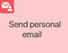
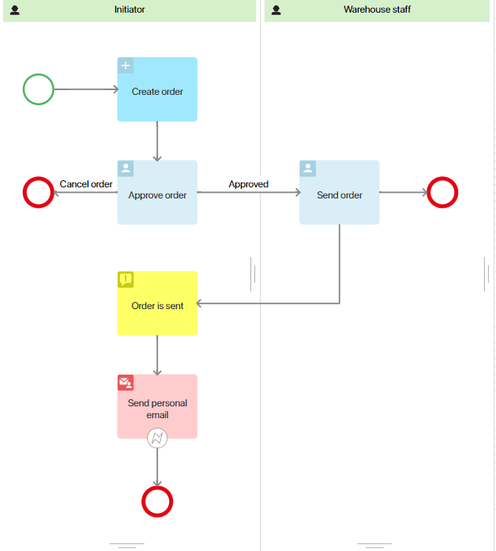
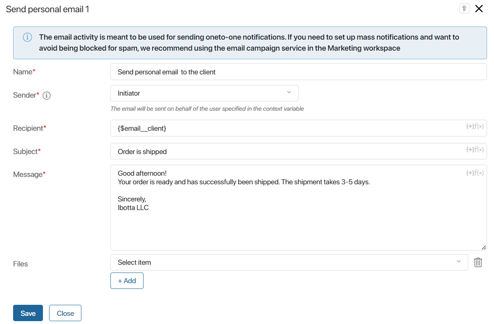
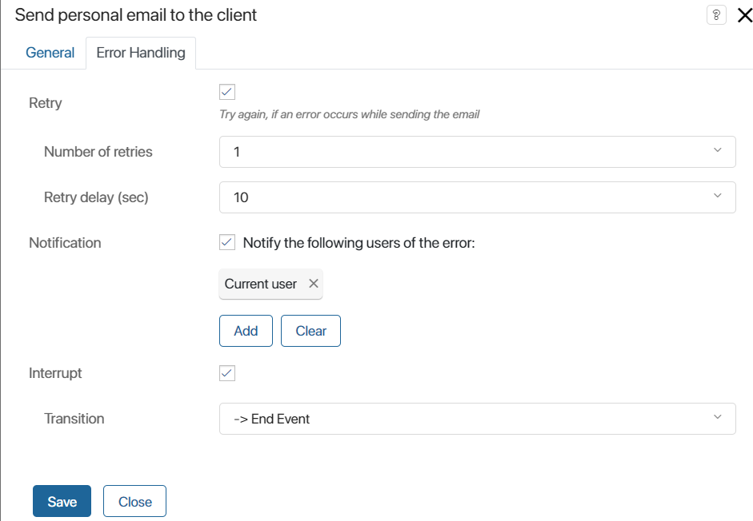

The Send personal email graphic element allows sending an email on behalf of an BRIX user during a business process. The message will be saved in the personal mail that is linked to the user’s account. You can send the notification to a single email address.
For example, a sales rep can notify a client about sending an order or send them a commercial proposal.
Employees who have connected their email address to the built-in email client in the Email workspace can send emails using this element. The user should also allow using email in business processes in the profile settings.
Set up the sending of personal email
Let’s consider the use and configuration of the element using an example.
A sales manager creates a deal where they interact with a client. CRM activities like Call, Email, etc. are used for this purpose. Emails are sent from the manager’s personal email address connected to the built-in email client.
Once the client agrees to the purchase, the manager starts the order processing. During the process, they create the order, enter the required information, and send it to the warehouse. When the order is completed and shipped, the manager needs to notify the client and send a bill with shipment details.
To ensure that the client sees the sender of the message and the email is saved in the manager’s inbox, the Send personal email element is used for notification in the process. Then the sent email will be included in the main correspondence with the client, which can be displayed, for example, in the form of a related transaction.
To add an element to a business process, go to the process designer. On the toolbar to the right of the modeling canvas, open the System elements tab. Drag and drop the element onto the flow chart and place it wherever the process requires an email to be sent from a certain BRIX user’s personal email.
In our example, the element is placed after the manager has been notified that the order has been completed and shipped.

Double-click the element and configure the settings on the General and Error Handling tabs.
General tab
Fill in the fields:

- Name*. Enter the text to be displayed on the process diagram;
- Sender*. Specify the context variable storing the user on whose behalf the message will be sent. The sent email will be saved in the personal mail connected to the user’s account in the Email workspace;
- Recipient*. Specify the email address to which the notification should be sent. You can use a context variable;
- Subject*. Write a short subject, for example, Order is shipped. Using a context variable, you can add additional information, for example, the name of the order or its number. This will allow you to generate a more informative email subject;
- Message*. Enter detailed information. Using variables, you can specify additional data, such as the total cost of the order, expected delivery date, etc. Use HTML markup to format the text as required.
Please note, that you can only specify a property of the String type in the fields, which is added to the process context. It must be filled in as the process progresses before the personal email activity is executed. For example, a warehouse worker sees a client’s email address in the created order and enters it into a separate field on the form of their task.
To use a variable, click {+} in the right corner of the field. You can also add conditions and functions, in the same way as for generating the name of an item from a template;
- Files. Add a document used in the process, for example, an invoice. To do this, select the context variable of the Files type from the drop-down list.
Error Handling tab
When sending an email, an error may occur, for example, the sender or recipient address is not defined. You can set the further course of the process and actions to be performed in this case.
To do this, fill in the fields on the Error Handling tab:

- Retry. Select this option to resend the email;
- Number of retries. Specify the number of attempts to resend the email;
- Retry delay (sec). Define the frequency of attempts;
- Notification. Enable this option to notify responsible users in case of an error. You can select:
- Current user. It is the person that belongs to the swimlane where the Send Personal Email element is placed on the process diagram;
- Context variable. For example, the initiator;
- Group;
- Org chart item;
- Interrupt. In case of an error, the process will go through the selected process path.
If all the parameters are set, click Save in the element settings window. Then save and publish the process.
When the process reaches the configured element, the client will receive an email on behalf of the user. It will be saved in the personal email connected to the employee’s account.
Found a typo? Select it and press Ctrl+Enter to send us feedback